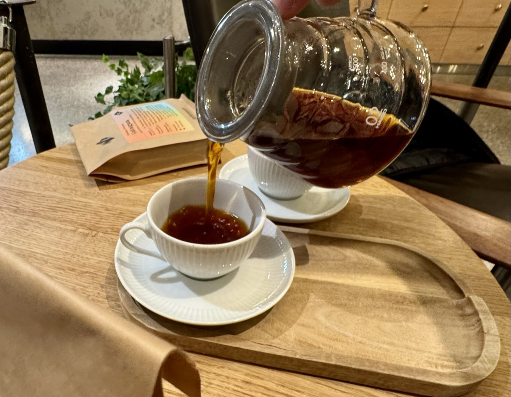
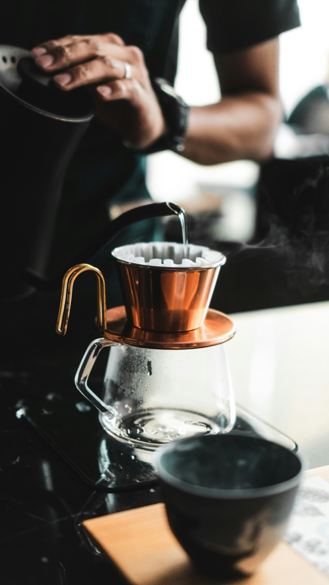
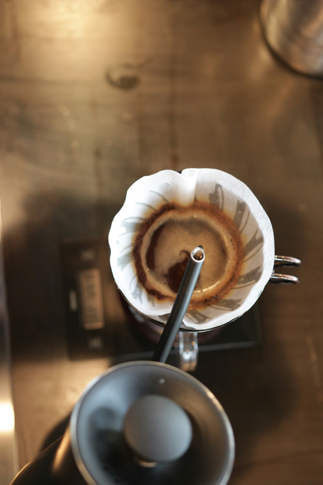

Oslo takes coffee seriously. This is a city where the house style is a pale, fruity light roast brewed as filter coffee, where a World Barista Champion opened a roastery in a side street in Grünerløkka, and where people discuss Ethiopian washing methods the way others discuss wine.
This walk takes you to four of the places that built that reputation — on foot, at an easy pace, with proper sit-down stops at each. You start in the city centre, climb gently to the park and village feel of St. Hanshaugen, follow the Akerselva river past its waterfalls and old mills, and finish in Grünerløkka, Oslo's liveliest neighbourhood.
Your guide tells the story of each place and the neighbourhood around it, and helps you order — then lets the coffee do the talking.
Our sister company Oslo Bike Tours runs the same four cafés as a 22 km bike tour with hotel pickup. See the Oslo Coffee Tour by bike →



Four of the places that made Oslo a coffee city: Fuglen in the city centre, Java in St. Hanshaugen, Supreme Roastworks at Vulkan by the Akerselva river, and Tim Wendelboe in Grünerløkka. If a café is closed or packed on the day, your guide swaps in another favourite nearby.
No. The price covers your private guide and the route. You order and pay for what you want at each stop — a filter coffee, an espresso, a pastry or nothing at all.
About 4 km in total, at an easy pace with long sit-down stops. The route is on pavements and the river path, with one gentle climb up to St. Hanshaugen. Comfortable shoes are all you need.
Not at all. The walk is as much about the neighbourhoods between the cafés — the park at St. Hanshaugen, the waterfalls on the Akerselva, the streets of Grünerløkka — as it is about the coffee.
Yes, all year. In winter the walk is a good way to spend a dark afternoon: short stretches outside, then warm cafés. Wear warm shoes with good grip; when the pavements are icy we bring ice spikes.
Yes. Our sister company Oslo Bike Tours runs a 22 km Oslo Coffee Tour by bike, visiting the same four cafés.